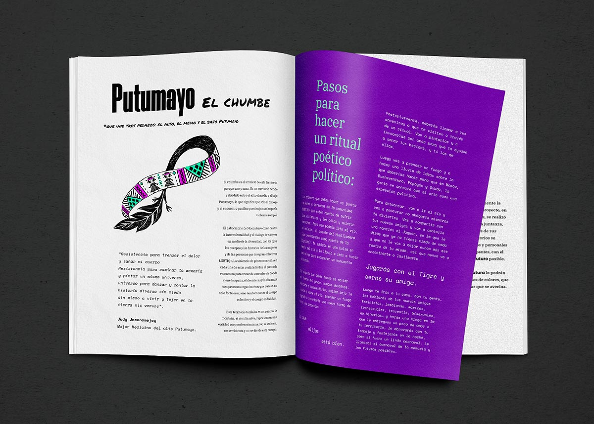
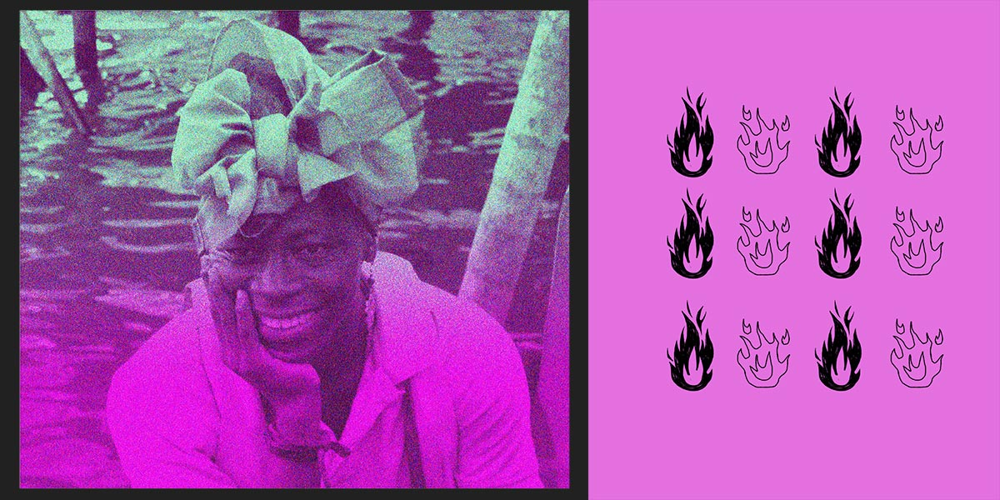
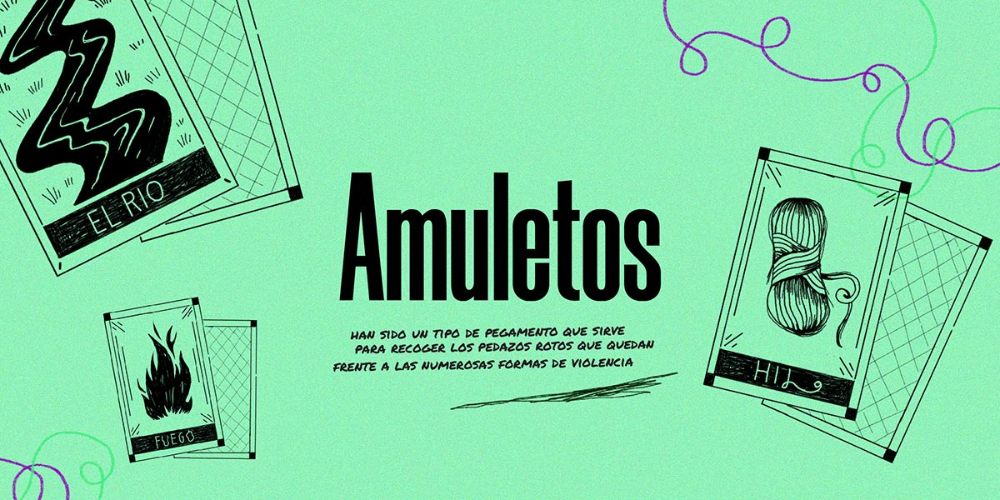
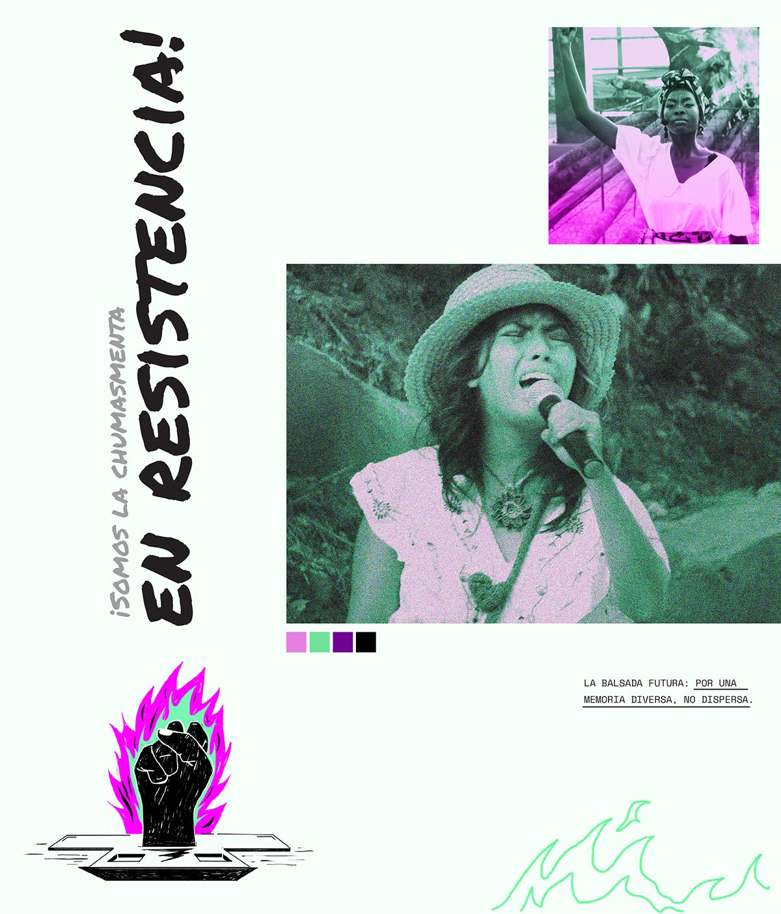
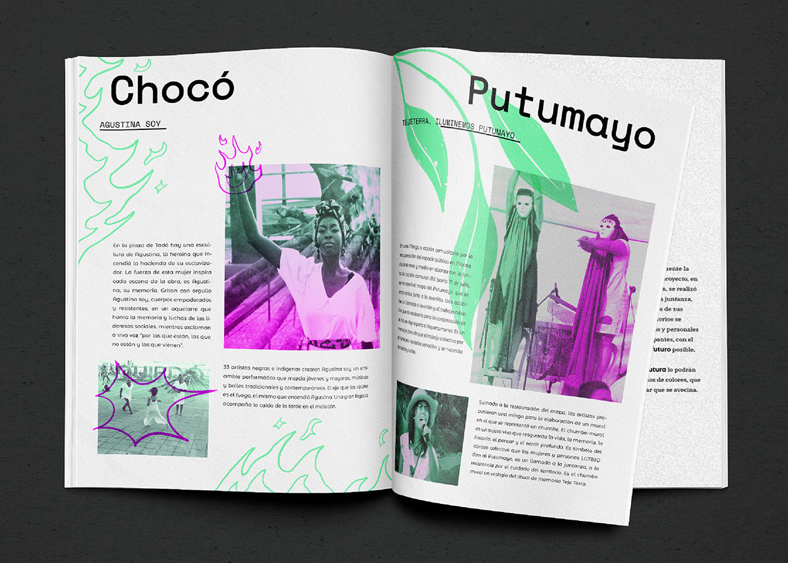
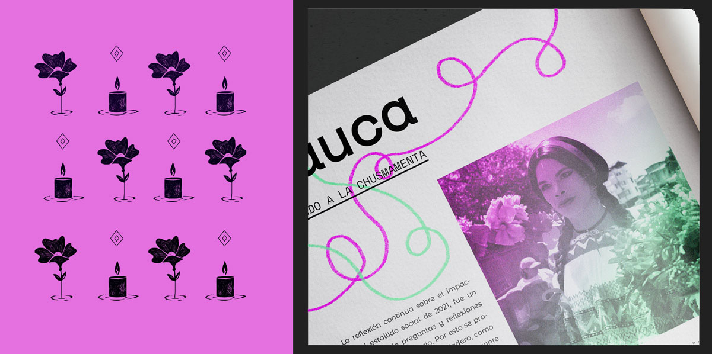
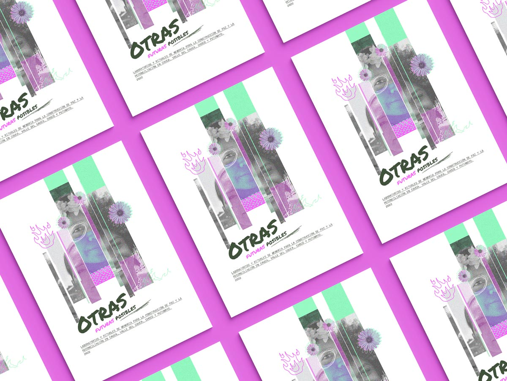
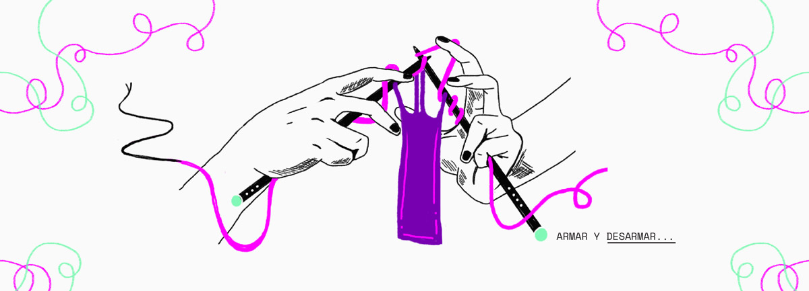

Other possible futures
> Editorial design
"We are the 'crowd' in resistance!"
 "We are the indigenous people who have resisted extermination since the arrival of the colony, those who have found meaning in life despite violent acts, and we continue to persistently weave the memory of all peoples." —Julieth Morales, Misak artist.
 "In the voice of the majority, my story is told today. And with the aid of fire, I am going to tell what I did. I went from estate to estate and set them ablaze in my name. In the name of the ancestors, in the name of all our Iré. I burned down the master's house. I, a Black woman, set fire to the master's house." —Coco Kilele, poet.
 "Resistance to weave the pain and heal my body. Resistance to walk through memory and paint a single universe, a universe to dance and tell the diverse story without fear, without the fear of living and weaving my verses into the earth." —Judy Jacanamejoy, medicine woman from the Upper Putumayo.
 About the project
"We are the indigenous people who have resisted extermination since the colonial era began. Despite facing violent acts, we find a sense of life and persistently weave the memory of all our peoples”
During the months of May and June 2022, we collaborated with La Red Nacional de Mujeres and Colombia Diversa, supporting the Memory Laboratories initiative. These platforms served as spaces for cultivating artistic endeavors aimed at constructing the historical memory of women and individuals within the LGBTIQ+ community across the regions of Cauca, Valle del Cauca, Chocó, and Putumayo in Colombia.
Within these laboratories, conversations revolved around the past, present, and future. To represent the past, an amulet was crafted in each region, embodying reflections on the repercussions of gender-based violence. The present was symbolized through rituals. Moreover, the laboratories captured the participants' journeys of political and personal memory, aiming to envision potential futures.
As part of the project, a public event took place in each region, inviting people to come together and envision diverse futures through their artistic expressions. We documented the entire process through multiple graphic recordings. After the event, we compiled the gathered information to create a fanzine, in which the future is depicted as a cluster of colorful threads; a path to embracing new opportunities.
Technical information:
Client: Colombia Diversa
Year: 2022
Delivered Products: 8 graphic recording y fanzine.